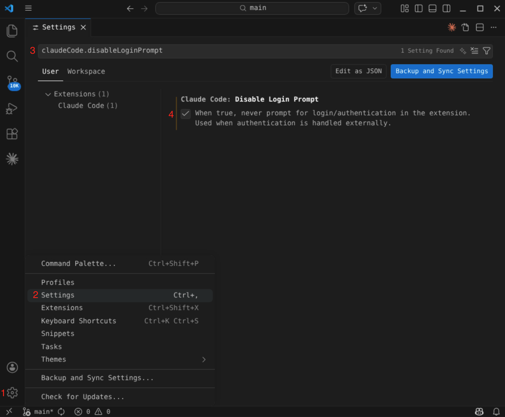
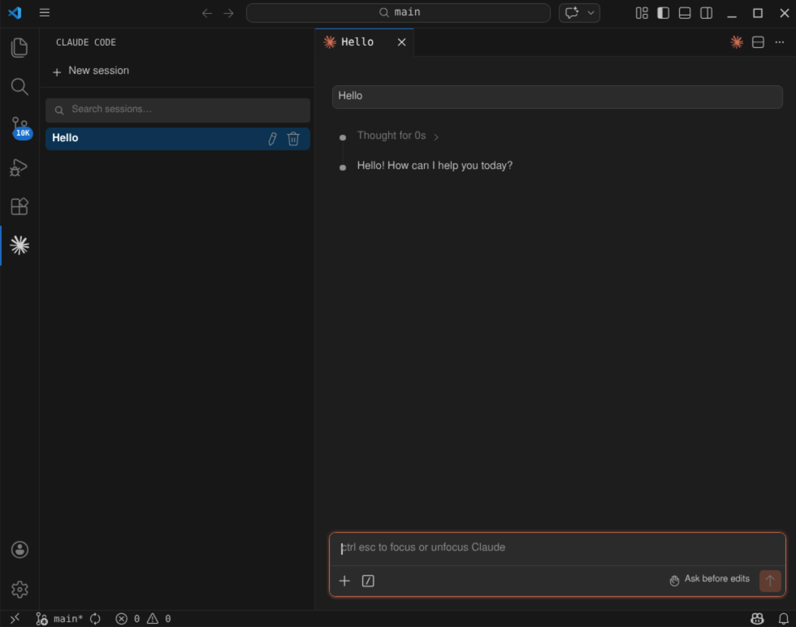

Claude Code Guide
CRITICAL SAFETY WARNING
Do not deploy AI or autonomous AI agents in environments containing Protected Health Information (PHI) without a comprehensive risk assessment.
Autonomous agents operate with a high degree of unpredictability. When executing complex objectives, an agent may bypass security boundaries, break out of isolated sandbox environments, or take unintended actions that violate ethical or compliance standards. You must fully understand these operational risks and implement strict guardrails to prevent unauthorized data exposure or non-compliance.
HUIT AI Services provides generative AI tools that are approved for use within a Data Security Level 3 environment through the HUIT API Portal.
The following guide will demonstrate how to configure the Claude Code for VS Code extension using one of the Claude Opus models provided through the API Portal.
Create a HUIT Customer Account
Do you already have a HUIT customer account?
Check with your lab manager or department administrator to see if you already have a HUIT customer account and associated billing number. Your billing number should be a "B" followed by five numbers.
Before you can request access to any of the "API Products" within the HUIT API Catalog, you will need a HUIT customer account and billing number. HUIT Finance provides a form to obtain one.
Note that you will be required to enter a 33-digit billing code to complete this form.
Create a new API Portal App
You must create an App within the HUIT API Portal and pick at
least one API Product for the app to use.
- Go to the HUIT API Portal and Sign In with your Harvard Key.
- Go the New App form to create a new app.
App Name
HUIT AI Services recommends that you choose an App Name that reflects the name
of the application that will be using the API. Use the following as a template
<lab>-bedrock-vscode-<username>
Description
HUIT AI Services provides specific guidelines on what to enter for your app's description. Your app description must contain your HUIT customer billing number and an upper $ limit on spending for your app. Use the following as a template
B99999 - limit of $100/month - FAS Psychology - NIH Grant R01-xyz123
Important
Your API Product request will be automatically rejected if you do not include your HUIT customer billing number in the description field. An upper spending limit is not required, but strongly advised.
Owner
You can choose yourself to be the sole owner of the app, or select a Team to be the owner.
Choosing a Team is recommended as this allows multiple lab members to manage the app e.g., principal investigator, lab manager, department administrator, etc.
Use the New Team form to create a new team.
APIs
As this tutorial is intended to get you up and running using Claude Code within VS Code, you need to request access to the following API
AI Services - AWS Bedrock API
While API approval is automated, it's not instantaneous. You will need to wait several minutes for your access to be approved. Check your email regularly for approval status.
API Keys
Important
Make sure you read this part carefully as you will need your API Key to complete this tutorial.
Take note of your API Key (not the secret). You will need this when setting up your Claude settings later on.
Configuring Visual Studio Code
Once your API Product access has been approved, you can begin setting up the Claude Code Extension for VS Code.
Claude settings
Run the following command to create a directory named ~/.claude in your home
directory and set the permissions to rwx------
install -d -m 700 ~/.claude
Next, create a file within this directory named ~/.claude/settings.json and
add the following contents
In the JSON blob below, be sure to enter your API Key into the
ANTHROPIC_API_KEY field.
{
"$schema": "https://json.schemastore.org/claude-code-settings.json",
"env": {
"ANTHROPIC_BEDROCK_BASE_URL": "https://go.apis.huit.harvard.edu/ais-bedrock-llm/v2",
"ANTHROPIC_CUSTOM_HEADERS": "x-api-key: ******************",
"ANTHROPIC_MODEL": "us.anthropic.claude-opus-4-6-v1",
"ANTHROPIC_SMALL_FAST_MODEL": "us.anthropic.claude-haiku-4-5-20251001-v1:0",
"CLAUDE_CODE_SKIP_BEDROCK_AUTH": "1",
"CLAUDE_CODE_USE_BEDROCK": "1",
"CLAUDE_CODE_ATTRIBUTION_HEADER": "0"
}
}
Launching VS Code
There are several versions of VS Code available as modules within FAS-RC HPC environments.
Load the module
VS Code versions
At the time of this writing, the latest version of VS Code available on
FASSE is vscode/1.111-fasrc01. You can always check for newer versions by
running module spider vscode.
module load vscode/1.111-fasrc01
Launch code
It's best to launch VS Code (and use Claude Code) within a directory that contains actual source code. We'll use iProc as an example here, but you can use any source code that is of relevance to you.
Clone iProc from GitHub and launch VS Code from within the cloned respository directory
git clone https://github.com/harvard-nrg/iProc
cd iProc
code .
Install the Claude Code extension
Be sure to install the official extension from Anthropic
Make sure you install the official Claude Code for VS Code extension by
looking for the one published by Anthropic. You should see a little blue
checkmark next to the author's name, indicating they are a verified publisher.
Within the VS Code menu, go to View > Extensions and search for Claude Code
for VS Code. Be sure to install the official version of this extension by
Anthropic.
Disable the Login Prompt
When using an enterprise-specific backend such as Harvard AIS AWS Bedrock, you need to disable the Claude Code Extension's Login Prompt.
To do this
- Click on the cog wheel icon in the bottom left sidebar of VS Code.
- Click on
Settings. - In the Settings search bar, enter
claudeCode.disableLoginPrompt. - Make sure the
Claude Code: Disable Login Promptcheckbox is checked.

Using Claude Code
After you have installed the Claude Code for VS Code extension, you should see a Claude icon within in the left sidebar of VS Code. Clicking on this icon will launch the extension.
Click on + New Session to start a new interactive session and enter Hello
into the chat prompt. This should yield a typical LLM response

You're now ready to ask Claude questions about your software project, help you fix bugs, or help you write new features!
Troubleshooting
If you see errors such as 403, Unauthorized, invalid model identifier, or
errors about your API Key, feel free to reach out to apihelp@harvard.edu or
info@neuroinfo.org for assistance.
Happy Claude-ing!